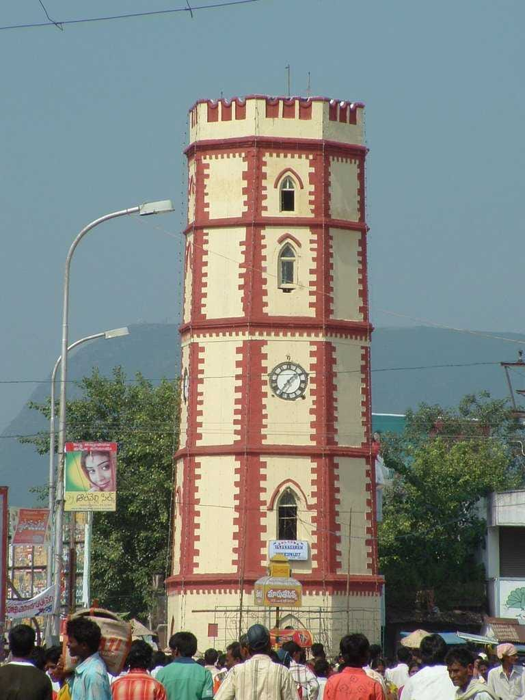
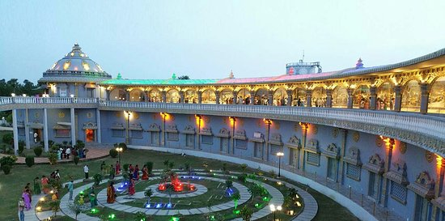

Vizianagaram


A comparatively recent addition, Ramanarayanam is a religiously themed complex depicting scenes of the great epic of Ramayana. The centrally air-conditioned edifice houses the sculptures in a unique bow and arrow-shaped construction. In the evenings, the entire area is colourfully lit up and cultural programmes are often organised in a huge hall (Kalyana Mandapam). A Lord Vigneswara Temple is at the entrance and at the tip of the arrow, a 60-feet-high Hanuman statue has been installed which is visible even from a distance of 1 km. Stretching over an area of 20 acres, the park is home to verdant greenery, including nine sacred trees. In addition, there are temples dedicated to Lord Rama and Vishnu, a huge library with over one lakh spiritual books, and a meditation centre. The vast campus is also home to a residential Veda Pathshala and a boutique vegetarian restaurant.
CLICK HERE TO go to another website